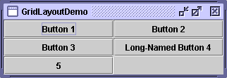

Feedback Form
|
|
Start of Tutorial > Start of Trail > Start of Lesson |
Search
Feedback Form |
Here's a snapshot of an application that uses aGridLayout.
 You can run GridLayoutDemo using JavaTM Web Start. Its code is in
GridLayoutDemo.java.
A
GridLayoutplaces components in a grid of cells. Each component takes all the available space within its cell, and each cell is exactly the same size. If you resize the GridLayoutDemo window, you'll see that theGridLayoutchanges the cell size so that the cells are as large as possible, given the space available to the container.Below is the code that creates the
GridLayoutand the components it manages. You can find the whole program inGridLayoutDemo.javaThe constructor tells thepane.setLayout(new GridLayout(0,2)); pane.add(new JButton("Button 1")); pane.add(new JButton("Button 2")); pane.add(new JButton("Button 3")); pane.add(new JButton("Long-Named Button 4")); pane.add(new JButton("5"));GridLayoutclass to create an instance that has two columns and as many rows as necessary.
[PENDING: This section will be converted to present its information in an API table.]The
GridLayoutclass has two constructors:At least one of thepublic GridLayout(int rows, int columns) public GridLayout(int rows, int columns, int horizontalGap, int verticalGap)rowsandcolumnsarguments must be nonzero; therowsargument has precedence over thecolumnsargument. ThehorizontalGapandverticalGaparguments to the second constructor allow you to specify the number of pixels between cells. If you don't specify gaps, their values default to zero.
The following table lists some of the examples that use grid layout.
Example Where Described Notes GridLayoutDemoThis page Uses a 2-column grid. ComboBoxDemo2How to Use Combo Boxes One of many examples that use a 1x1 grid to make a component as large as possible. LabelDemoHow to Use Labels Uses a 3-row grid. DragPictureDemoHow to Use Drag and Drop and Data Transfer Uses a 4-row grid to present 12 components that display photographs.
|
|
Start of Tutorial > Start of Trail > Start of Lesson |
Search
Feedback Form |
Copyright 1995-2004 Sun Microsystems, Inc. All rights reserved.